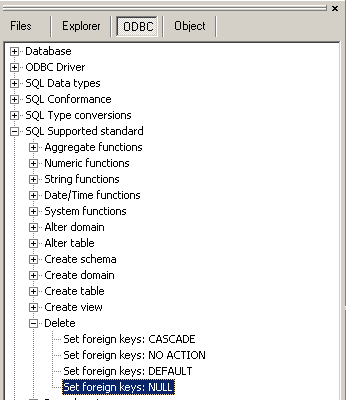

Use this command to remove rows from a table or a view's base table.
|
Syntax of the SQL statement |
|
DELETE FROM base-table-name [WHERE search-condition] |
If foreign keys are supported by the database, you can find out whether as a result of a delete of a row in a master table the rows in the detailed table will be cascaded delete also, or whether the columns in the detailed table will be set to NULL or the DEFAULT value as a result of the deletion in the master table. As an alternative the database might take 'NO ACTION' on the detailed rows.
The information in the ODBC supported standard tree is rather unreliable for renowned database vendors!

See also: INSERT , SELECT , UPDATE